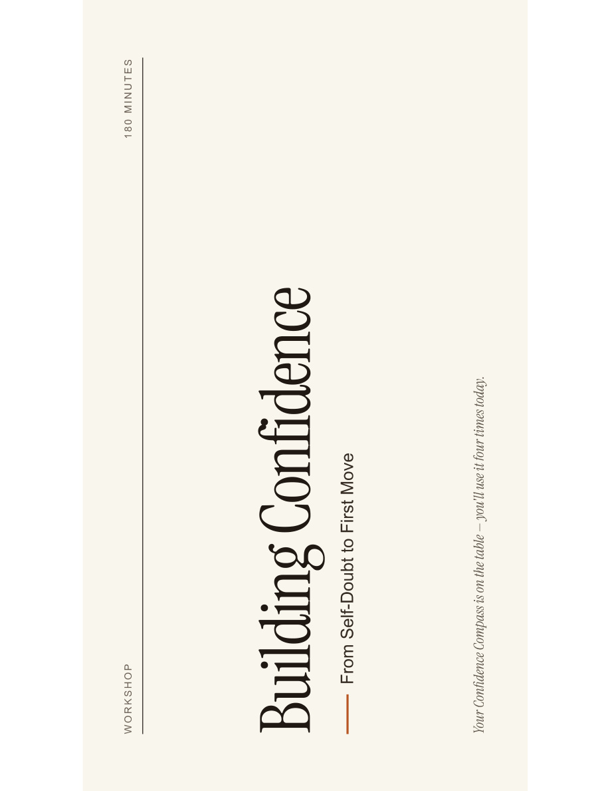
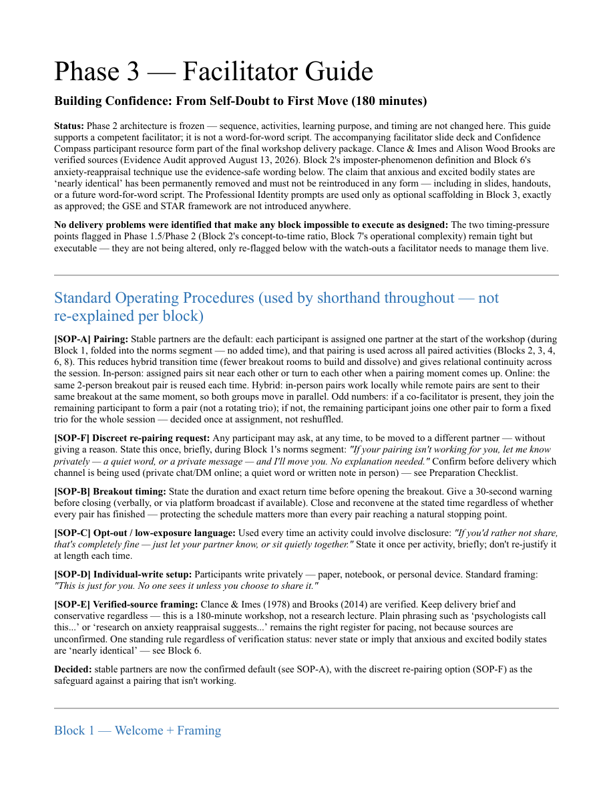
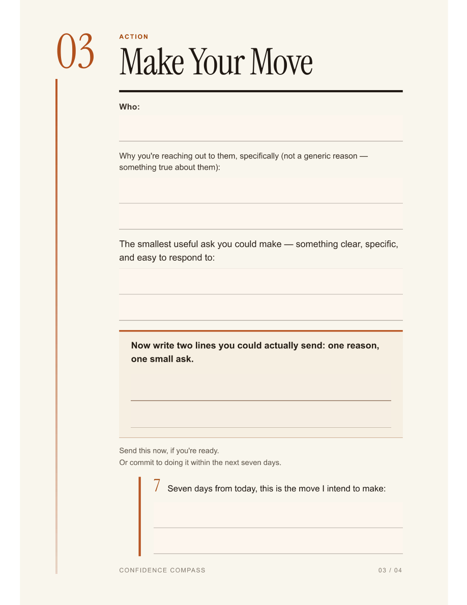

Building Confidence
From 50 pages to one focused learning experience.
A facilitator-ready, three-hour learning experience for young entrepreneurs, developed from a much larger body of research and curriculum content. The design challenge was not to fit everything in — it was to decide what learners needed, sequence it deliberately, and create enough structure for reflection, practice, and action.
Project snapshot
Client / contextEntrepreneurship Talks
AudienceYoung job seekers & early entrepreneurs
RoleInstructional Designer / Facilitator
Source scope49-page guide · 43 topics
Workshop scope9 blocks · 180 minutes
Two different confidence gaps, one shared blind spot
The seminar's audience — 18 to 30 year olds navigating what developmental psychologist Jeffrey Arnett calls "emerging adulthood" — isn't one uniform group. The problem statement documented for this project names two recurring patterns within it. Career Seekers often have real, demonstrable ability, but present it with a lack of confidence that undersells what they can actually do. Early Venturers face a different problem: without a title or organisation behind them, they struggle to describe their own offer clearly and to sound credible talking about their own business. Traditional corporate communication training tends to assume one context — an existing employer, an existing role — and misses both patterns.
That's also why the curriculum was split into two parts rather than one: professional communication (aimed more at the Career Seeker pattern) and public speaking (aimed more at the Early Venturer pattern), sharing a single instructional structure so the two curricula stay coherent with each other rather than becoming two unrelated products.
The documentation also situates the problem in a wider context. European Commission research (Eurobarometer, 2023) found that 46% of young Europeans aged 15–30 say they would consider starting a business, but only 9% have actually done so. That gap is useful as context for why this kind of communication training matters to this age group — it isn't evidence of what this particular curriculum achieved, and I've been careful throughout this case study to keep that distinction clear.
The seminar concept itself started as my own idea. Developing it into a structured, 43-topic curriculum for Entrepreneurship Talks was the instructional design problem this case study documents.
The hardest part was deciding what not to teach
The source document was intentionally comprehensive: 49 pages spanning 43 topics across professional communication and public speaking. That breadth was useful as a knowledge base, but it was not a usable three-hour learning experience.
The workshop therefore became an exercise in purposeful selection. I reduced the source material to a nine-block arc built around the moments most likely to help this audience move from self-doubt to a concrete next action.
49-page source guide→
Content selection→
9-block learning arc→
Facilitated practice→
Learner action
Instructional design is not content compression.
The goal was to give learners less information — and more opportunity to recognise, articulate, practise, and act.
Structuring 43 topics across two curricula
The central design problem was consistency without repetition: 43 topics needed a shared instructional architecture so the curriculum felt coherent rather than assembled ad hoc — but a single repeated structure, applied 43 times, risks feeling mechanical or interchangeable well before the learner reaches topic 40.
Every topic follows the same seven-step sequence:
Definition→
Scenario→
Myth vs Reality→
Key Takeaway→
Activity→
Entrepreneurship Link→
Confidence Compass
| Step | Purpose |
|---|---|
| Definition | A clear, jargon-free introduction to the concept. |
| Scenario | A running persona makes the concept concrete rather than abstract. |
| Myth vs Reality | Confronts a common misconception the learner likely already holds. |
| Key Takeaway | One memorable, quotable line to anchor the topic. |
| Activity | Structured, psychologically safe practice. |
| Entrepreneurship Link | Ties the skill to venture-building, not just general "career advice." |
| Confidence Compass | A reflection question turned inward, closing the topic. |
The repetition is deliberate — it's what makes 43 topics learnable as a set rather than 43 separate things to relearn. What keeps that repetition from feeling flat is that two of the seven steps are built to vary by design: the Scenario step runs a single persona across every topic, so the learner is following one continuous, evolving character rather than a new hypothetical stranger each time; and the Entrepreneurship Link step ties each topic to a different specific venture-building context, so the "same" structure is doing different work depending on what the topic is actually about.
Design note
Definition is deliberately placed before Activity, not the other way round — the structure moves from a clear concept to guided application before asking the learner to attempt anything unsupported, following the logic of Vygotsky's scaffolding: support is highest early and steps back as competence builds within the topic.
Four design pillars
Underneath the seven-step structure sit four recurring mechanisms that show up across activities, regardless of topic:
| Pillar | What it does |
|---|---|
| Objective self-evidence | Activities ask learners to document real strengths they can point to, rather than complete a vague self-assessment. |
| Controlled vulnerability | The Myth vs Reality step gently challenges an existing belief, rather than confronting it head-on. |
| Micro-action testing | Activities ask for small, low-stakes stretches outside the learner's comfort zone, not large ones. |
| Behavioural reframing | Shifts the question a learner is implicitly asking from "Am I good enough?" toward "What is my strategy?" |
Designing for different starting points
Learners don't arrive at the same confidence level, so the curriculum was built against three learner personas drawn from the same audience research behind the Snappi & FinTech flagship project — reused here because the underlying confidence patterns were already well understood, not because the audiences are identical.
| Persona | Confidence pattern |
|---|---|
| Aspiring Entrepreneur | Has the underlying knowledge but lacks real-world exposure, which tends to produce mediocre confidence. |
| Curious Individual | Starts from a low baseline and some skepticism — typically the lowest starting point in the room. |
| Tech Enthusiast | Digitally fluent and often overconfident on the surface, which can mask real underlying vulnerability. |
The design anticipates that these three patterns won't move through the seminar the same way — the Aspiring Entrepreneur and Curious Individual are expected to dip before they rise as the Myth vs Reality steps unsettle assumptions they're holding, while the Tech Enthusiast is expected to move more steadily throughout. This is a design expectation built into how activities are sequenced and differentiated, not a measured result — no learner confidence data has been collected to confirm it plays out this way in practice.
In line with that, the curriculum is written to support confidence development rather than promise it: activities create opportunities to practise in a structured, lower-stakes setting, and the Confidence Compass step is designed to help learners recognise evidence of their own progress rather than simply be told they've improved. The aim throughout is to create conditions in which confidence and self-efficacy may develop — not to guarantee that they will.
Instructional decisions and their grounding
| Decision | Grounded in |
|---|---|
| Framework design — definition before application | Vygotsky's scaffolding and Zone of Proximal Development |
| Authentic practice — real scenarios, adult-to-adult tone | Kolb's experiential learning + Knowles' andragogy |
| Reflection before advice — the Confidence Compass | Schön's reflective practice + Whitmore's GROW model |
| Safety before challenge — inclusive activity design | Bandura's self-efficacy theory |
| Entrepreneurship as the lens, not generic "career" framing | Audience-specific relevance to this cohort |
A learning system, not a slide deck
The final workshop package combines learner-facing, facilitator-facing, and quality-control elements. The deck carries the live experience; the facilitator guide translates the architecture into timings, transitions, watch-outs, hybrid notes, and low-exposure alternatives; and the Confidence Compass gives participants a private place to turn reflection into language and action.
The workshop keeps the original seven-part logic, but applies it selectively inside a focused 180-minute arc rather than trying to run all 43 source topics. This keeps the design coherent while protecting attention, pacing, and practice time.
What shipped
Each artifact solves a different part of the delivery problem: what participants see, what the facilitator needs, and what learners keep for themselves.

Facilitator Guide
Minute-by-minute timing, transitions, hybrid notes, watch-outs, and low-exposure alternatives.
View PDF →
Confidence Compass
A five-page participant resource that moves from reflection to clarity, action, and resilience.
View PDF →Full source curriculum49-page consolidated document · 43 topics across 2 curricula — retained as the underlying resource library
Not published openly
An iterative loop, not a straight line
The project evolved in two layers. First came the comprehensive source curriculum. Once that knowledge base was stable, the work shifted from expansion to reduction: selecting what belonged in the live experience, sequencing it into nine blocks, and building the facilitator and participant supports around that arc.
Claude was used as a brainstorming and drafting partner in that loop — not a replacement for judgement. I set the framework, the values, and the intended outcomes; AI helped draft and stress-test individual topics against them. Every inconsistency that surfaced was corrected through human review, not assumed correct because AI had produced it.
Design note
One concrete example: an early AI-drafted activity was structured in a way that unintentionally excluded quieter participants — it rewarded speaking up first rather than giving everyone a comparable way in. Catching that wasn't automatic; it came from reviewing the draft against the inclusive-design intent behind the seven-step structure, and the activity was revised before it went into the guide.
What's documented, and what isn't yet
It's worth being precise about what this section can and can't claim.
What's documented as project evidence: the full 43-topic source framework was completed; a focused 180-minute workshop was derived from that source material; the final package now includes a facilitator deck, facilitator guide, and Confidence Compass participant resource; evidence-sensitive wording was reviewed and unsupported claims were removed rather than carried forward.
What isn't yet available: no learner outcome data — confidence measures, facilitator observation notes, participant feedback, or evidence of behavioural change — has been collected or documented for this curriculum. Manager approval and a completed, applied framework are evidence that the project was finished and accepted; they are not evidence of what happened for learners who go through it. I'm stating that plainly rather than filling the gap with a number that doesn't exist.
Two honest limitations are worth naming here rather than glossing over. First, by linking confidence and communication skill so directly to entrepreneurial outcomes, the curriculum risks implying they're the main barrier to venture success — when capital, timing, and market conditions matter just as much, and the seminar doesn't address any of those. Second, the Confidence Compass — the reflection step I'd point to as the most distinctive part of the design — asks learners to name their own weaknesses honestly, which is genuinely difficult even inside a psychologically safer activity structure. That's a real limitation of the design, not a solved problem.
What I'd carry forward
The biggest design decision in this project was subtraction. Building the source curriculum showed me how much could be taught; designing the workshop forced me to decide what should be taught in one three-hour experience.
That shift changed how I think about instructional design. A strong learning experience is not the shortest possible version of a large document. It is a deliberate sequence of moments that helps learners notice something, try something, and leave with a next step they can actually use.
The Confidence Compass became the clearest expression of that idea. Rather than ending each concept with more advice, it turns the question back to the learner: what evidence do you already have, what do you want to say, what move will you make, and what remains true if the outcome is disappointing?
I also became more deliberate about designing for the facilitator. The final guide supports a competent facilitator without scripting every word, and makes psychological safety operational through opt-outs, private reflection, stable pairing, and low-exposure alternatives. That balance between structure and autonomy is something I would carry into future facilitated learning.
Instructional design & facilitation: Nicoleta Malaki · AI-supported drafting, critique, and visual iteration · Entrepreneurship Talks